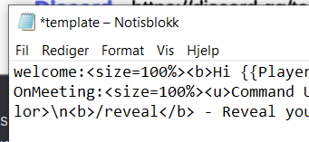
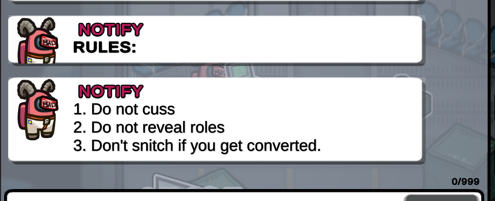

Note: Being familiar with HTML helps a ton, but you don't need to be to understand this FAQ.
Locate your TOHE-DATA folder
When inside your modded among us folder, go to -> TOHE-DATA -> template.txt
Here you should see something like this:
Which Equates to this:
And this:
Don't worry; We'll get back to how this works later.
Tags
So as we saw, there came to be 2 messages from the 2 individuals lines. The way it does that is it uses Unique TAGS, these are a set of 3 special tags which ALWAYS apply for whenever an action happens (such as a meeting starting).
Try to look at these messages and figure out what they are:

Got it yet?
Well if you haven't the first tag `welcome:` is called first, and everything thereafter will be sent out ALWAYS once a player enters the lobby or a match has finished.
Important note: It's Neccessary to write the message you want to attach to a tag all in the same line, or any text which is set to a new line using ENTER shall not be counted.
And the `OnMeeting:` tag is also called, which is sent out every time a meeting starts. Tags are not case sensitive; so even onmeeting: works.
The last Unique Tag is `OnFirstMeeting:` and is called only on the first meeting of the match.
Duplicate Tags
You can make multiple clones of the same tag, and everytime it is called (such as each time someone joins). ALL clones of it will be called of it in descending order, but each clone is a unique message.
Here's an example:
Create your own tag!
You will need to know that \n hops over to a new line.
With that in mind make a `rules:` basic tag, and try to recreate this: (Don't worry if you get something wrong, attempt your best)
You call it by typing /t rules in the chat

DO NOT continue, before attempting.
You notice I used a <b> </b> formatter, this makes the text contained within BOLD, we'll get into this later.
With that said, Congratulations! You're officialy a welcome msg creator! Now, this is only the fundamentals.. time to get into the real JUICY stuff.
Different Text Formatters
So as with <b>I AM BOLD</b>, there exists a few more, and these are:
<title>Woah I'm the title </title>
<Size=??%> Oo I got a funky size</Size>
<color=#?????>Wait, why I'm blue?</color>
<i> I'm skewed! </i>
<mark>WAit? I'm marked?</mark>
<u>woah, I have a floor!</u>
<s>chinese censorship got done me..</s>
<sup>I'm heightened!</sup>
<sub>I'm lowered ;( </sub>
There's a much more extensive list at unity-formatting website.
Fonts, Sprites, Gradients etc...
Here's an example I made using some of these:
rules:<b>RULES:</b>\n<color=#f00010>1. Do not reveal <i>ROLES</i>.\n2. Do not kill <b>AFK</b>.\n3. Be <color=#f000e4>kind</color> to eachother ;D</color>
Variables
Variables allow you to fetch specific objects from the game, such as the {{PlayerName}},
you can learn more about them here: tohre.dev/Advanced.html (Scroll down)
Since you've got this far, that means you're now completely able to make your own templates.
The more you work with & customize yours, the more you'll learn..
If you're ever lost or need a restart, there should be another file called "Default_Teamplate" contained within TOHE-DATA. This contains the latest default template.
If you haven't made one yet, this is the one I currently use: